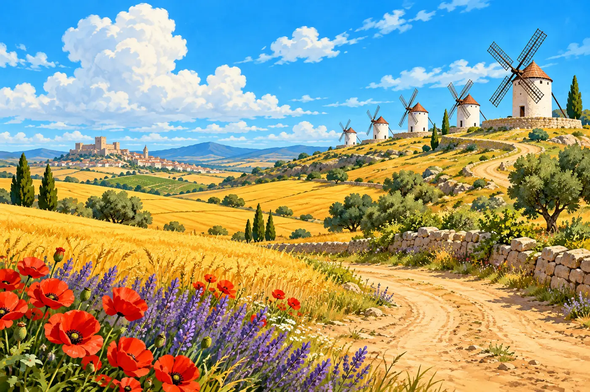
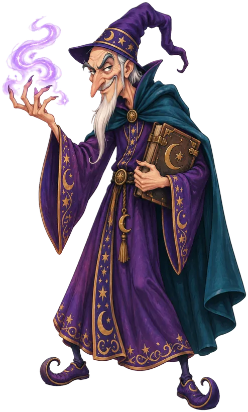
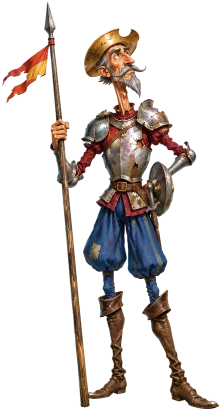
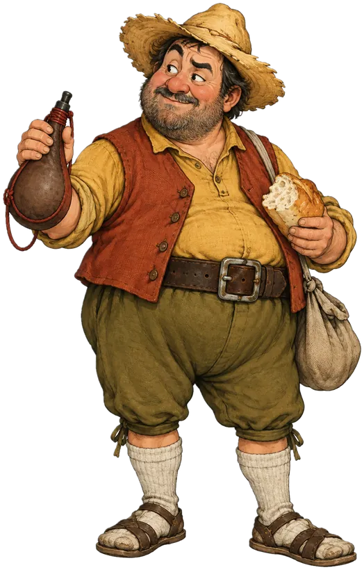
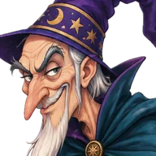
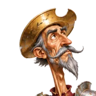
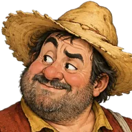

Un juego sobre la primera parte del QuijoteEl impostor de Frestón
Frestón es el sabio encantador al que Don Quijote le echa la culpa de todo. Esta vez se metió en sus diálogos: en cada escena puso en boca de uno lo que en el libro dice el otro. Para descubrirlo hay que conocer cómo piensa cada uno. ¿Lo descubrís?
- Leé el diálogoCinco parlamentos entre Don Quijote y Sancho, con sus acotaciones.
- Acusá al impostorTocá la línea que no corresponde a quien la dice y confirmá.
- Cuidado con las trampasA veces Frestón no tocó nada. Si acusás a un inocente, se apaga una vela. Después, pesá en la balanza qué mueve a cada uno.

La balanza · +50
Retrato de dos miradas
Don Quijote mira el mundo desde los libros y el ideal: transforma lo que ve. Sancho lo mira desde el cuerpo y la conveniencia: nombra lo que ve y calcula lo que cuesta.
Los dos se mueven por una promesa: la fama y Dulcinea, uno; la ínsula, el otro. Y los dos son leales: ninguno abandona al otro, aunque no se entiendan.
Sancho cree en la ficción cuando le conviene (Micomicona) y Don Quijote acepta las pruebas de Sancho, pero las acomoda a su ideal (la jaula). El «baciyelmo» es el símbolo de esa mezcla.
Ronda por ronda
Copialo y mandáselo a quien arme el mapa del grupo.
Mapa del grupo
Pegá los códigos de tus compañeros, uno por línea. Vas a ver cuántos sellos rompió el grupo, qué escenas costaron más y qué línea real engañó a más gente.